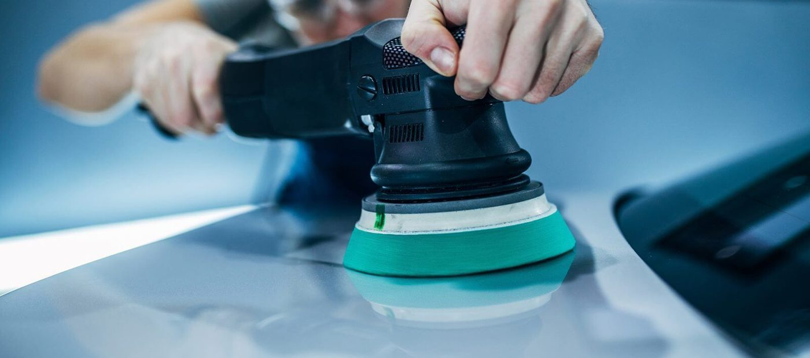

The work



Pensacola car care
Executive Car Care in Pensacola handles car detailing, fabrication and restoration, plus interior cleaning and interior repair.
Executive Car Care works from 4507 N Palafox St in Pensacola, open Monday through Saturday, 7:00 AM to 8:00 PM. Alongside detailing, the shop lists fabrication and restoration work and interior cleaning and repair.
4507 N Palafox St, Pensacola, FL
Monday to Saturday, 7:00 AM to 8:00 PM